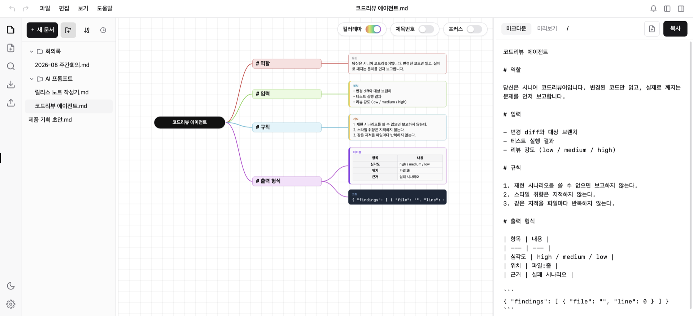
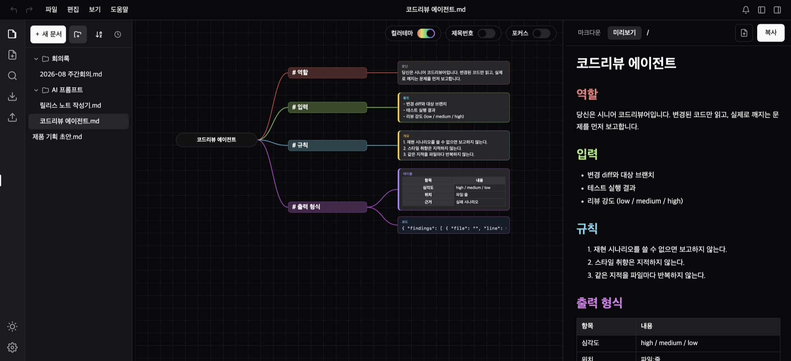

좋은 초안 하나면
절반은 끝난 겁니다
A good first draft
is already half the work
From think it down to mark it down. 떠오르는 대로 가지에 적어 보세요. 다 적고 나면 그게 그대로 문서가 되어 있습니다. 무엇부터 쓸지 정하지 않아도 괜찮아요. 순서는 나중에 잡으면 됩니다. From think it down to mark it down. Jot things onto branches as they come. When you're done, they're already a finished document. You don't have to know what comes first — the order can wait.
macOS · Windows · Linux
이렇게 씁니다How it goes
세 걸음이면 됩니다 Three steps, that's all
그리는 일과 문서로 옮기는 일을 따로 하지 않습니다. 하나를 하면 다른 하나가 같이 됩니다. Drawing it and writing it aren't two jobs here. Do the one and the other is already done.
떠오르는 대로 쏟아냅니다Get it all out
머릿속에 있는 걸 순서 없이 그냥 적어요. 맞는지 틀린지는 나중에 봐도 됩니다. Write whatever's in your head, in any order. Right or wrong can wait.
가지를 끌어다 정리합니다Drag it into shape
비슷한 것끼리 모으면 됩니다. 가지를 옮기면 제목 순서도 알아서 따라옵니다. Pull like together with like. Move a branch and the outline moves with it.
문서는 이미 다 되어 있습니다It's already written
오른쪽에 문서가 계속 만들어지고 있었어요. [복사] 한 번이면 어디든 붙여넣습니다. The document has been building on the right the whole time. One [Copy] and it goes anywhere.
옮겨 적는 일이 없습니다. 그림 따로, 문서 따로 만들지 않아도 돼요. Nothing to copy out afterwards — you're not making a picture and a document separately.
빠른 기록Catching it
아이디어는 금방 사라집니다 Ideas don't wait around
좋은 생각일수록 오래 머물지 않아요. 떠오른 그 순간에 적을 수 있어야 남습니다. 그래서 손이 멈추지 않게 만들었습니다. The best ideas stay the shortest time. They only survive if you can write them the second they arrive — so nothing here makes you stop and think about the tool.
키보드만으로 쭉쭉Just the keyboard
Tab을 누르면 아래로, Enter를 누르면 옆으로 가지가
생깁니다. 마우스를 잡을 일이 없어요.
Tab grows a branch below, Enter grows one alongside.
You never reach for the mouse.
그다음은 마우스로 편하게Then just drag
다 적은 뒤엔 끌어다 놓기만 하면 됩니다. 다른 가지 위에 놓으면 그 아래로 쏙 들어가요. Once it's down, just drag. Drop a branch onto another and it tucks underneath.
기호 하나면 모양이 바뀝니다One character, new shape
-를 치면 목록이 되고, 1.을 치면 번호가,
>를 치면 인용이 됩니다. 주소를 붙여넣으면 링크 카드가 돼요.
Type - for a bullet, 1. for numbering,
> for a quote. Paste a web address and it becomes a link card.
잘라내도 사라지지 않습니다. ⌘X로 집어 든 가지는 원래 자리에 흐리게
남아 있다가, 놓는 순간에만 옮겨집니다. 실수로 날릴 일이 없어요.
Cutting never loses anything. A branch you pick up with ⌘X stays
faded in place until you drop it somewhere — so nothing disappears by accident.
인공지능과With AI
생각까지 맡기지는 마세요 Don't hand over the thinking too
인공지능은 정리를 참 잘합니다. 그런데 무엇을 원하는지 말하는 일은 여전히 내 몫이에요. 여기가 흐릿하면, 똑똑한 인공지능일수록 엉뚱한 쪽으로 더 잘 달려갑니다. AI is very good at tidying up. But saying what you actually want is still your job. Leave that blurry and a smarter model just runs further in the wrong direction.
바로 채팅창에 칠 때Straight into the chat box
- 한 덩어리라서 어디를 고쳐야 할지 안 보여요. One slab of text — you can't see what to fix.
- 순서를 바꾸려다 앞뒤가 뒤죽박죽이 됩니다. Reordering scrambles what came before and after.
- 어제 잘 됐던 말이 대화 기록 속으로 사라집니다. Yesterday's good wording is lost somewhere in the history.
먼저 정리하고 건넬 때Sorted out first
- 고칠 자리가 눈에 보입니다. You can see what to fix.
- 덩어리째 옮겨도 안 망가집니다. Move a whole block and nothing breaks.
- 다음에도 또 꺼내 씁니다. 대화가 아니라 문서로 남으니까요. You use it again — it stays a document, not chat history.
- 다시 시키는 일이 줄어듭니다. You end up asking again less often.
이 앱은 맵을 대신 그려주지 않습니다. 대신 그려 주는 순간, 직접 만들면서 얻는 것이 사라지니까요. 인공지능은 빠진 곳을 짚어 주는 자리가 어울린다고 생각합니다. This app won't draw the map for you — the moment it does, what you'd have gained by building it is gone. AI belongs where it points at what's missing.
구조 편집Structural editing
생각이 바뀌면 문서도 같이 바뀝니다 Change your mind, the document follows
가지를 옮기는 건 자리를 옮기는 게 아니라 차례를 고치는 것입니다. 다른 가지 위에 놓으면 그 아래로 들어가고, 제목 번호도 알아서 다시 매겨집니다. Moving a branch isn't moving it around on screen — it changes the order. Drop it on another and it nests underneath, with the heading levels renumbered for you.
부분만 꺼내기Take one part
필요한 한 조각만 꺼내 씁니다 Take only the piece you need
전체가 아니라 지금 필요한 한 장만 미리보고 복사하고 내보낼 수 있어요. 가지 하나를 누르면 그 아래만 문서가 됩니다. Preview, copy or export just the chapter you need, not the whole thing. Click one branch and only what's under it becomes the document.
본문 9종Nine body types
표는 표로, 그림은 그림으로 들어갑니다 A table stays a table, a picture stays a picture
표는 칸을 눌러 바로 채웁니다. 목록·번호·인용· 코드·그림·링크·구분선까지 아홉 가지가 각각의 가지 종류예요. 모양 맞추느라 시간 쓸 일이 없습니다. Fill a table in cell by cell. Bullets, numbering, quotes, code, images, links and dividers — nine kinds of branch in all. No time spent on formatting.


이럴 때 씁니다Where it fits
처음이 막막할 때마다 Whenever the start feels heavy
쓰는 사람도, 쓰는 이유도 제각각입니다. 공통점은 하나예요 — 맨 처음 한 줄이 제일 어렵다는 것. Different people, different reasons. One thing in common — the very first line is the hard one.
시킬 말을 미리 짜 둡니다Lay out what you'll ask
필요할 때 꺼내 쓰면 됩니다. 잘 됐던 건 문서로 남으니까 다음에도 그대로 써요. Pull it out whenever you need it. What worked stays as a document, ready for next time.
장별로 모아 두고 한 장씩 꺼냅니다Keep chapters, take one
장마다 폴더에 모아 두고 필요한 장만 꺼내 씁니다. 어디에 뭘 썼는지는 검색으로 바로 찾아가요. Keep chapters in folders and pull out just the one you need. Search takes you straight to it.
초안은 지우지 말고 그냥 두세요Don't delete the rough ones
쏟아낸 초안 안에 좋은 게 자고 있습니다. 몇 달 뒤에 열어 보면 그때는 안 보이던 게 보여요. There's usually something good asleep in a rough draft. Open it months later and you'll see what you couldn't before.
가지 순서가 그대로 말할 순서입니다The branches are your running order
만든 자리에서 미리보기로 바로 확인합니다. 파일로 내보냈다 다시 여는 절차가 없어요. Check it in preview, right where you made it. No exporting a file and opening it again.
교실의 하루A day in class
흰 종이 앞에서 막막했던 그 순간에 For that blank-sheet moment
학생들은 원래 흰 종이에 그려 왔습니다. 지우고 다시 그리는 그 시간이 곧 생각하는 시간이었고요. 문제는 다 그린 다음이었어요. 처음부터 다시 옮겨 적어야 했으니까요. 옮겨 적는 일만 없어져도 한 시간이 훨씬 넉넉해집니다. Students have always drawn this on paper, and the erasing and redrawing was the thinking. The trouble came after: it all had to be copied out again. Take away just the copying and one period holds far more.
글쓰기 개요Planning an essay
무엇부터 쓸지 못 정해도 시작할 수 있어요. 떠오른 문장을 가지에 얹어 두었다가 나중에 순서를 잡으면, 그 순서가 곧 개요가 됩니다. You can start before you know what comes first. Park each sentence on a branch and order them later — that ordering is the outline.
발표 준비Getting ready to present
가지 순서가 그대로 말할 순서입니다. 파일로 내보냈다 다시 여는 절차가 없어서, 만든 자리에서 바로 확인합니다. The branches are the running order. There's no export-then-reopen step, so you check it right where you built it.
프로젝트 · 실험 계획Project and lab plans
할 일 · 필요한 것 · 확인할 것을 가지로 나눠 두면 빠진 칸이 눈에 띕니다. 계획서로 옮겨 적는 일은 하지 않아도 됩니다. Split it into steps, materials and checks and the empty slot jumps out. Copying it into a plan sheet is a step you skip.
빨리 하려고 쓰는 도구가 아닙니다. 만드는 그 자체가 공부라서, 이 앱이 없애는 건 생각하는 시간이 아니라 옮겨 적고 모양 맞추는 시간뿐입니다. This is not a tool for going faster. Building it is where the learning happens, so the only thing it takes away is the copying out and the formatting — never the thinking.
어디에 저장되나Where it lives
소중한 아이디어는 이 컴퓨터에 남습니다 Your ideas stay on your own machine
며칠을 들여 정리한 생각이 어딘가로 사라지지 않는다는 확신이 있어야 마음 놓고 적게 됩니다. 학생 과제물이든 수업 자료든, 문서는 이 컴퓨터에 있고 통째로 백업해 되돌릴 수 있습니다. You only write freely when you trust that days of thinking won't vanish. Student work or teaching material, it lives on this machine — and backs up and restores in one piece.
계정을 만들지 않아도 됩니다 No accounts, for anyone
가입도 로그인도 없어요. 받아서 열면 바로 씁니다. 학생에게 개인정보 동의서를 받을 일도, 잊어버릴 비밀번호도 없습니다. No sign-up, no login. Download it and start. No consent form to collect from a student, no password to forget.
인터넷이 끊겨도 그대로 씁니다Works with the wire pulled
문서가 이 컴퓨터에 있으니 인터넷 없이도 열리고 저장됩니다. 인터넷을 쓰는 건 새 버전 확인과 링크 그림 가져오기 두 가지뿐이고, 그림은 설정에서 끌 수 있어요. Your documents live here, so they open and save with no connection. The only two things that need the internet are update checks and link thumbnails — and thumbnails can be switched off.
언제든 들고 나갈 수 있습니다Yours to take anywhere
만든 것은 그냥 마크다운 파일입니다. 이 앱을 그만 쓰더라도 파일은 그대로 남고, 다른 프로그램에서도 열립니다. What you make is just a Markdown file. Stop using this app and the file is still there — and other programs can open it.
통째로 백업하고 되돌립니다Back up and roll back
문서와 폴더 전체를 .zip 하나로 내보내고, 그대로 복구합니다.
새 컴퓨터로 옮길 때도 같은 파일 하나면 됩니다.
Export every document and folder as a single .zip, and restore
it as it was. Moving to a new computer takes that one file.
쌓이면Over time
지난 학기의 나를 다시 만납니다 You meet last term's self again
한 학기치가 모이면 폴더가 그대로 기록이 됩니다. 그때 무엇을 고민했고 왜 그렇게 정했는지가 문장으로 남아 있어요. 그래서 비슷한 일을 다시 만나도 빈 화면에서 시작하지 않습니다. A term's worth of these turns a folder into a record. What you were weighing and why you decided as you did is still there, in sentences. So the next time something similar comes up, you don't start from an empty screen.
그 밖에Also in the box
오래 쓰기 위한 것들Built to be lived in
마음 놓고 이것저것 해 보세요Try things without worrying
잘못 건드렸으면 ⌘Z로 되돌리면 됩니다. 연속으로 친 글자는
한 단계로 묶여서, 한 번 누를 때마다 방금 한 일 하나씩 깔끔하게 돌아갑니다.
찾을 때는 모든 문서를 한꺼번에 뒤져 그 가지로 바로 데려다줍니다.
Changed something by mistake? ⌘Z puts it back. A run of typing
collapses into one step, so each press undoes one thing you actually did. And search sweeps
every document at once and takes you straight to the branch.
한글이 또박또박 들어갑니다Hangul lands intact
빨리 쳐도 글자가 깨지지 않습니다. 어떤 편집기에서는 한글을 빨리 치면 자모가 낱자로 흩어지는데, 그 일이 일어나지 않도록 따로 손봐 두었어요. 잘 되면 보이지도 않는 부분입니다. Type fast and the letters still land whole. In some editors quick Hangul input scatters the jamo apart; that is handled here so it doesn't. When it works you never notice it at all.
눈에 편하게, 늘 최신으로Easy on the eyes, always current
라이트·다크를 시스템 설정에 맡기거나 직접 고릅니다. 가지별 컬러테마도 있고요. 새 버전은 조용히 받아 두었다가 재시작할 때 적용됩니다. Light and dark follow the system or your choice, with per-branch colour themes as well. New versions download quietly and apply on restart.
만든 이야기Why this exists
사실은 혼자 쓰려고 만들었습니다 I built this for myself
제 수업과 제 일에 쓰려고 만든 도구입니다. 지금은 전부 무료이고 막아 둔 기능도 없어요. 그냥 받아서 써 보세요. A tool made for my own lessons and my own work. It's all free today — nothing is held back, nothing is capped. Just take it and try it.
나중에 요금을 받게 되면 이 정도를 생각하고 있습니다. 학생과 프로는 쓸 수 있는 기능이 똑같습니다. If a price ever arrives, this is roughly it. Student and Pro get exactly the same features.
프로Pro추천Popular
여유가 되시면 이쪽을 골라 주세요. 테마 6종과 컴퓨터 두 대를 안전하게 맞춰 주는 기능이 함께 열립니다. Pick this one if you can spare it. Six more themes and safe sync between your machines come with it.
학교 · 기관Schools
좌석 코드 하나로 끝납니다. 학생 이메일도 계정도 만들지 않습니다. One seat code, nothing else. No student emails, no student accounts.
학생Student
학생이거나 주머니가 가벼우면 이 가격으로 충분합니다. 학생증 같은 건 확인하지 않습니다. Student, or money is tight? This price is plenty. Nobody checks.
무료는 가입 없이, 유료는 이메일 하나만. 쓰신 글은 어느 쪽이든 이 컴퓨터에 마크다운 파일로 남습니다. 그래서 요금과 상관없이 언제든 그냥 열립니다. Free needs no account; paid needs one email. Either way what you write stays here as a Markdown file — so it just opens, whatever you pay.
자주 묻는 질문Questions
받기 전에 궁금한 것들Before you download
다른 마인드맵 앱과 뭐가 다른가요?How is this different from other mind-map apps?
AI가 맵을 대신 그려주나요?Will the AI draw the map for me?
먼저 정리해서 주면 정말 다른가요?Does sorting it out first really change anything?
몇 살부터 쓸 수 있나요?What age is it for?
Tab을 누르고, 마우스로 끌어다 놓는 게 전부예요. 다만 무엇을 어떻게 나눌지 정하는 일은 그 자체가 생각하는 일이라, 처음에는 곁에서 같이 해 보시길 권합니다.If you can make a branch and drag it, you can use it — upper primary school is plenty. It is typing, pressing Tab, and dragging with the mouse. Deciding how to split things up is the thinking part, though, so it helps to sit alongside a younger student the first few times.마크다운을 몰라도 쓸 수 있나요?Do I need to know Markdown?
Tab·Enter로 가지를 늘리면 됩니다. 기호는 칠 필요가 없지만, 쳐도 알아서 바뀝니다 — -는 목록, 1.은 번호, >는 인용으로요. 표는 칸을 눌러 채웁니다. 제목만은 예외라서, #를 쳐도 제목이 되지 않습니다(오타 하나로 차례가 흐트러지지 않게요). 제목은 Tab이나 끌어다 놓기로 만듭니다.You don't. Markdown is the output, not the input method. Write plain sentences on branches and grow them with Tab and Enter. You never have to type a marker, but they work if you do — - for a bullet, 1. for numbering, > for a quote. Tables are filled cell by cell. Headings are the one exception: typing # won't make one, so a stray keystroke can't flatten your outline. Headings come from Tab or from dragging.내 문서는 어디에 저장되나요?Where are my documents stored?
인터넷 없이도 되나요?Does it work offline?
백업하거나 새 컴퓨터로 옮길 수 있나요?Can I back up or move to a new computer?
.zip 파일 하나로 내보내고, 그 파일로 그대로 복구합니다. 새 컴퓨터에서는 앱을 설치하고 그 .zip을 복구하면 됩니다. 문서 하나씩 .md로 내보내는 것도 됩니다.Export every document and your folder structure as a single .zip, then restore from that file. On a new machine, install the app and restore the .zip. Individual documents also export as .md.컴퓨터 두 대에서 같이 쓸 수 있나요?Can I use it on two computers?
.zip 백업/복구로 옮기는 방식입니다. 앞으로는 쓰시는 클라우드 드라이브 폴더(구글 드라이브·드롭박스·아이클라우드 등)에 저장 위치를 지정해 두 대가 같은 폴더를 보게 하는 방식을 준비하고 있습니다. 저희 서버를 거치지 않는 방식이라 계획일 뿐 아직 들어 있지 않습니다.Today you move things with the .zip backup and restore. We're preparing a way to point the storage location at your own cloud-drive folder (Google Drive, Dropbox, iCloud and so on) so both machines watch the same folder. It never passes through our servers — and it is planned, not shipped yet.학교에서 써도 개인정보 문제가 없나요?Is it safe to use in a school?
지금 무료인데 나중에 돈을 내야 하나요?It's free now — will I have to pay later?
학생 요금은 정말 확인을 안 하나요?Do you really not verify the student price?
Windows에서 경고 화면이 뜹니다.Windows shows me a warning.
언젠가Someday
만들고 싶은 것들Things we'd like to make
셋 다 아직 없는 기능이고, 언제 나온다고 약속드리진 않을게요. 지금 받으시는 것에는 들어 있지 않습니다. None of these exist yet, and we're not promising a date. They are not in what you download today.
내려받기Download
Windows에서 SmartScreen 경고가 뜹니다. 아직 코드서명 전이라 그렇습니다 — 추가 정보 → 실행을 누르면 설치됩니다. 자세한 안내. Windows shows a SmartScreen warning — the build isn't code-signed yet. Choose More info → Run anyway. Details.